比较的不是“哪个更漂亮”
三套方向都被要求先完成同一个任务：让用户在两屏内看到“可能是什么、最缺什么、下一步做什么”，同时保留“信息完整度 / 办理进度”的区分、虚构演示标记和官方渠道边界。
因此可以把注意力放在：哪个世界更像工友会信任的入口，哪个在强光下和一只手里仍然可读，哪个能自然延伸到行动步骤和填报参考。
共同约束
不自动提交 · 不要求身份证号 · 不承诺结果
不把离线原型的 mock 数据带进正式实现。
当前蓝色工具感保留为安全基线，不作为第四个新方向。
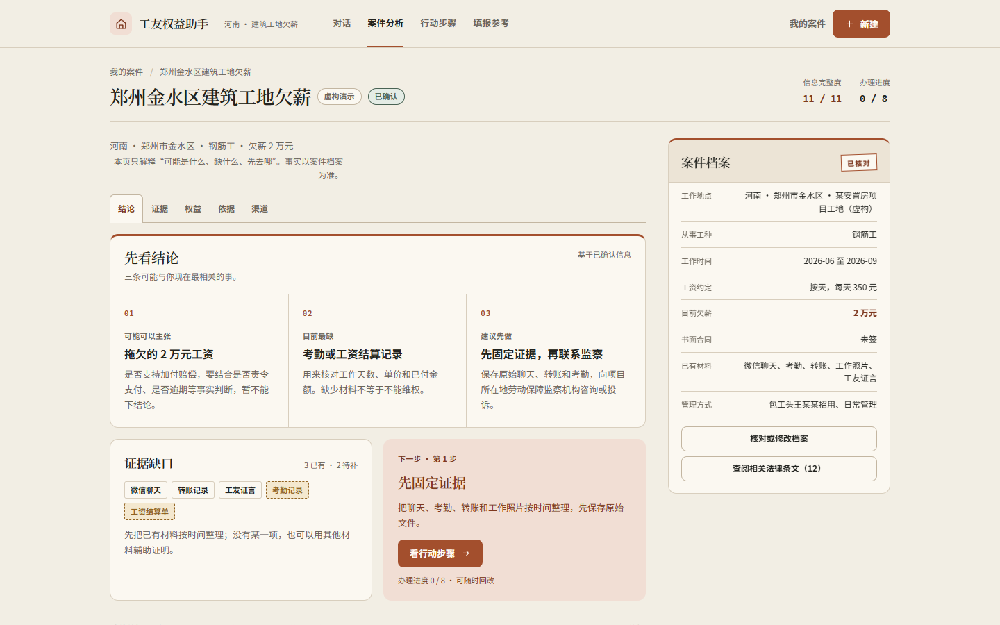
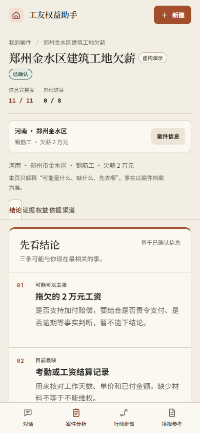
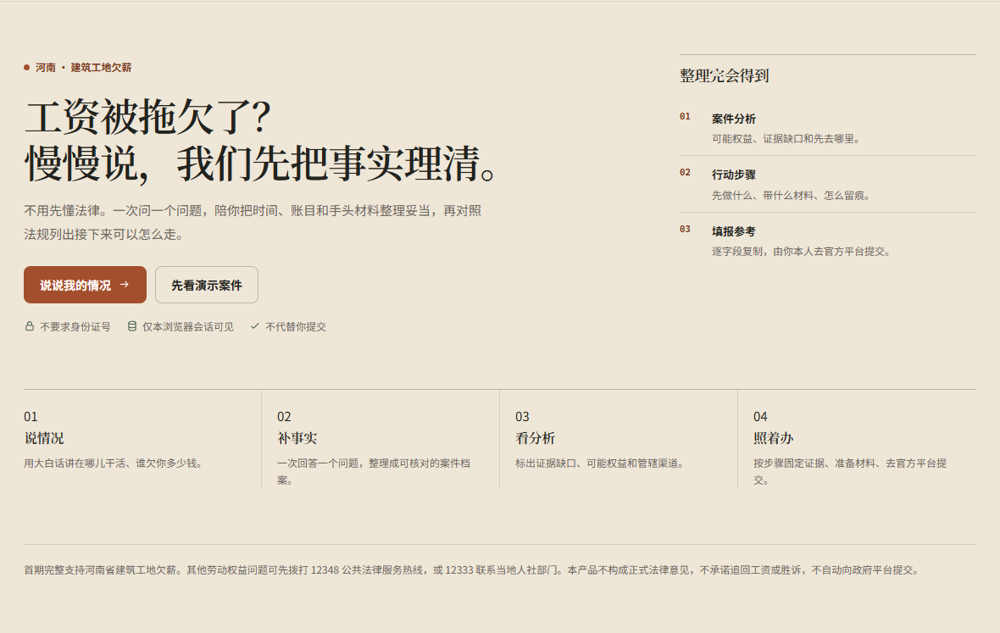
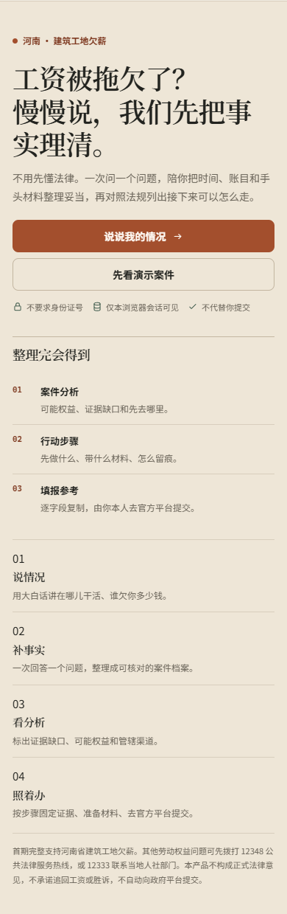
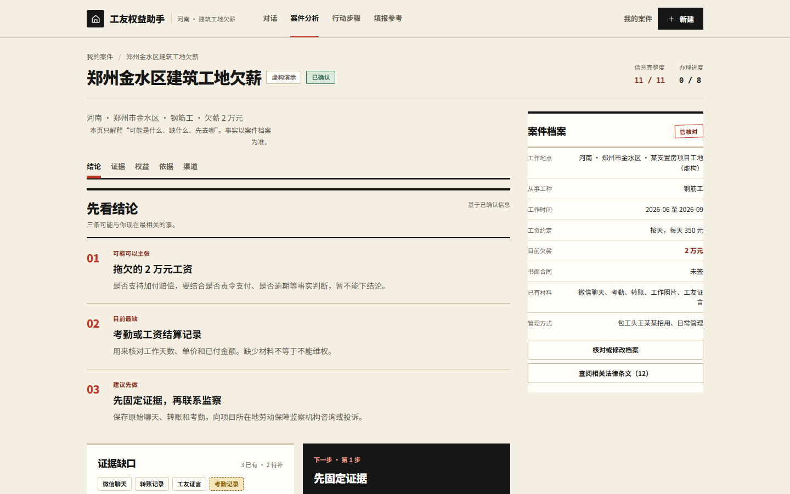
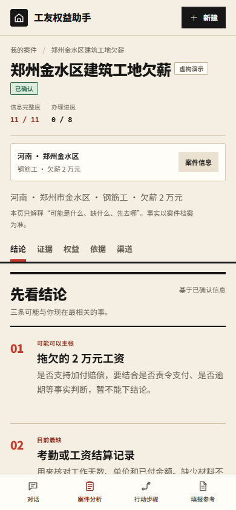
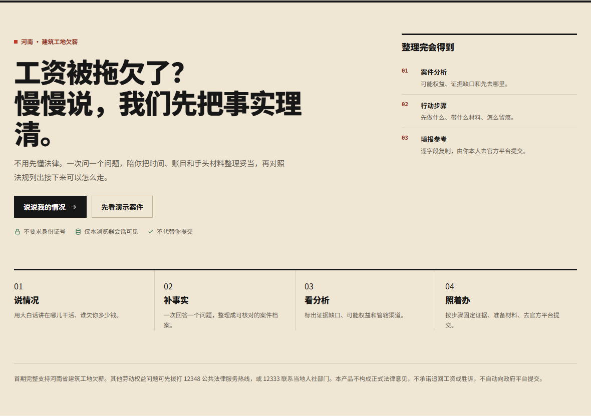
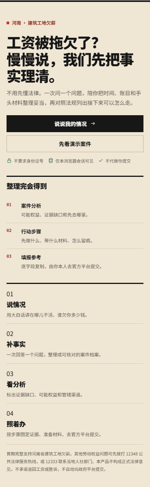
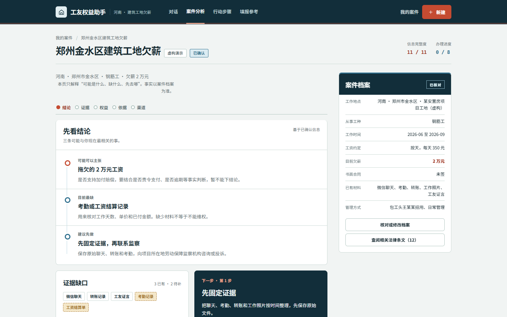
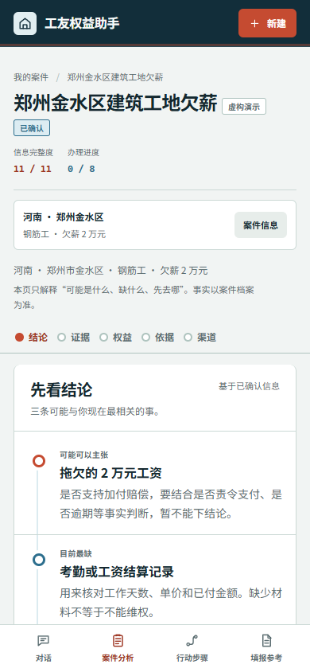
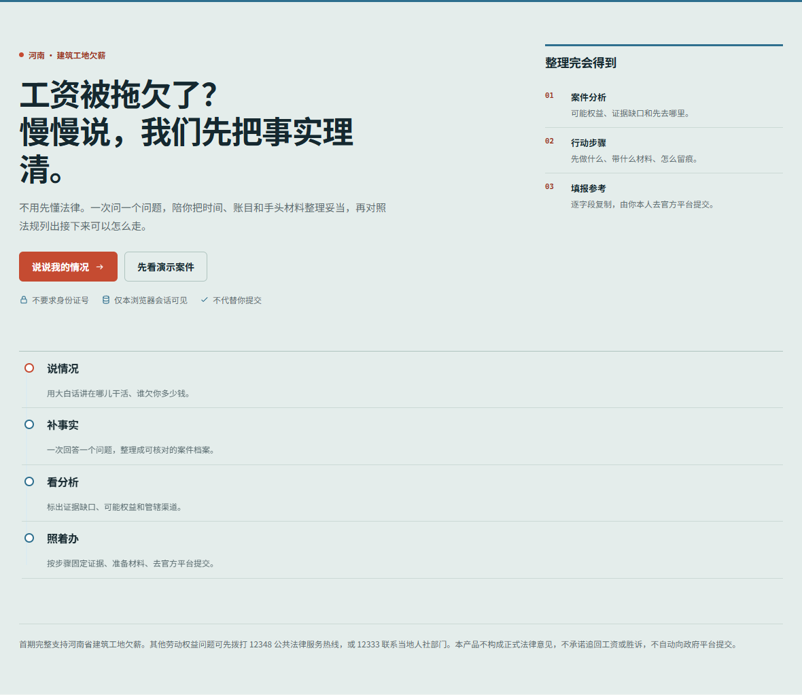
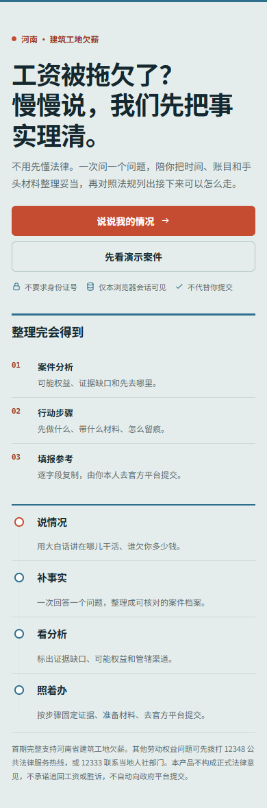
定稿组合B + A + C
工人读本 × 案卷事实 × 办理路线
以 B 的读本体量和低读写门槛为主骨架；用 A 的事实页签、案卷感和“已核对”章把事实变重；C 只进入行动步骤，用“现在 / 下一步 / 之后”的站点替代长清单。
打开定稿组合 →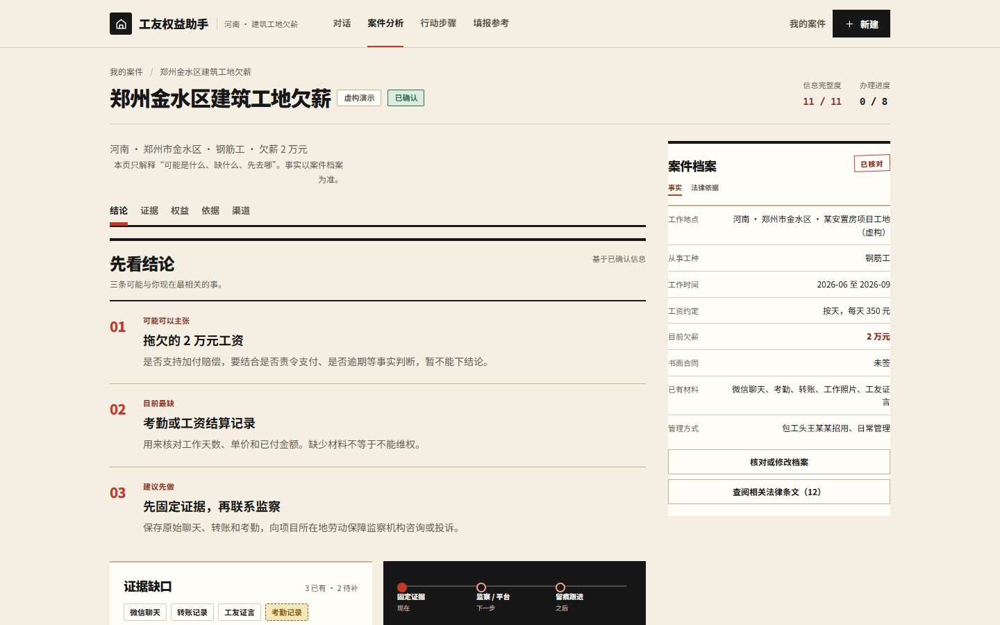

并排比较
评分为本轮设计判断（1–5），不是用户测试结果。三套方向均通过 1440/390 无横向溢出检查。
| 维度 | A · 案卷档案袋 | B · 工人夜校读本 | C · 办理路线图 |
|---|---|---|---|
| 一眼读懂 | 4 / 5 | 5 / 5 | 3 / 5 |
| 低读写门槛 | 3 / 5 | 5 / 5 | 3 / 5 |
| 可信 / 专业 | 5 / 5 | 4 / 5 | 4 / 5 |
| 移动端舒适 | 4 / 5 | 5 / 5 | 3 / 5 |
| 与“整理材料”匹配 | 5 / 5 | 4 / 5 | 4 / 5 |
| 主要风险 | 像档案馆；正文易过密 | 像教材；需要成人语气 | 像交通图；需要解释站点 |
已选定 B + A + CCONFIRMED
B 作为主方向：390px 首屏仍能先给结论，字号、对比和“一次只问一个问题”的版面节奏最适合工地/宿舍场景。
A 进入事实面板：案件档案的页签、案卷感和“已核对”章，让事实从一段信息变成可核对、可带走的材料。
C 只进入行动步骤：用“现在 / 下一步 / 之后”的站点替代全部展开的长清单，不把分析页交通图化。
安全基线：当前正式前端的蓝色工具感（纸白、系统无衬线、克制边线）可读、稳妥，但缺少“工友会信任的入口”和“我现在在哪一步”的识别度。它可以作为评审对照，不作为本轮新方向。